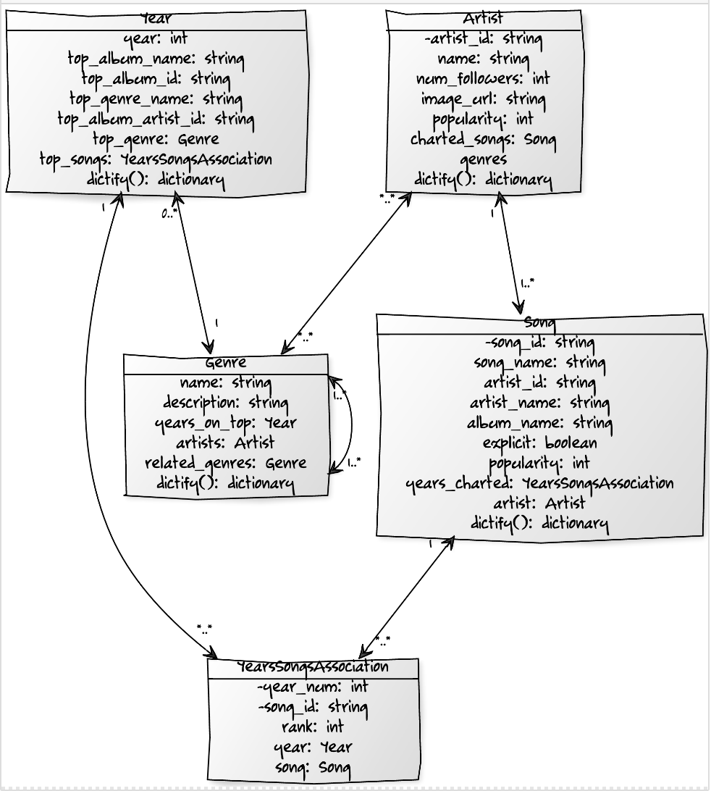
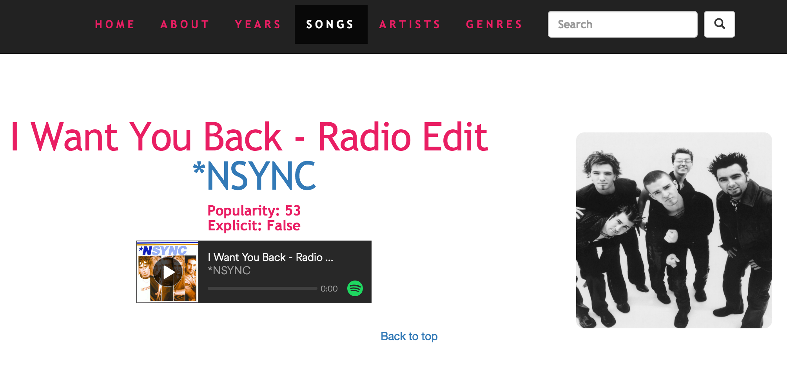

Sweetify
Sweetify.me is a Dynamic WebApp that my team of 5 created for Professor Downing's CS373 Software Engineering summer course. We built a music discovery website with a complete database, restful API, search bar, and spotify embedded web music players. Sweetify is meant to be a website where users can browse the top 100 songs of each year for the past 26 years, as well as the artists, albums, and genres associated with those songs. Our database consists of 4 models: Songs, Artists, Genres, and Years. We populated our database by scraping Wikipedia for the top songs per year and then scraping Spotify API and Last.fm API to fill out the accompanying data for each of those songs. We used NameCheap to acquire the domain name and DigitalOcean to host our website. We used Bootstrap and AngularJS for the front end, SQLAlchemy and PostgreSQL for the back end, and Apiary and Flask for the API. We also used SQLite to create and purge databases for unit testing. We met in person in the computer labs to build this website together and used Slack to communicate outside of the computer labs.
UML Diagram:

Use Cases:
Songs
Let's say you just want to see the top list of songs, just click on the songs tab in the navigation bar and you will be directed to a page that lists out all of the songs with information about the artist, album, year, and more. You may just want to see a list of the top songs to discover, or maybe you are looking for a specific song to find the artist. Either way, we've got you covered.
Artists
So maybe you are the type who wants to listen to a bunch of songs by the same artist. No problem, just click on the artists tab in the navigation bar and you'll be presented with some of the top artists with their name, songs, image, and more. This way you can find your new favorite artist and maybe even go see them live in a concert some time!
Genres
Everyone has that favorite type of music. Click on the genres tab in the navigation bar and you'll see a list of genres. In the genres you'll see a name, description, list of artists, and more. You will be able to discover new artists from your favorite genre.
Years
Remember that school dance in high school when your favorite song was playing, but it's been so long you forgot the name of the song? Have no fear, search around on the years page to find years with some of the top songs from that year and relive the glory days!
Sample Page:

Here's the github for project: https://github.com/ailae/cs373-idb